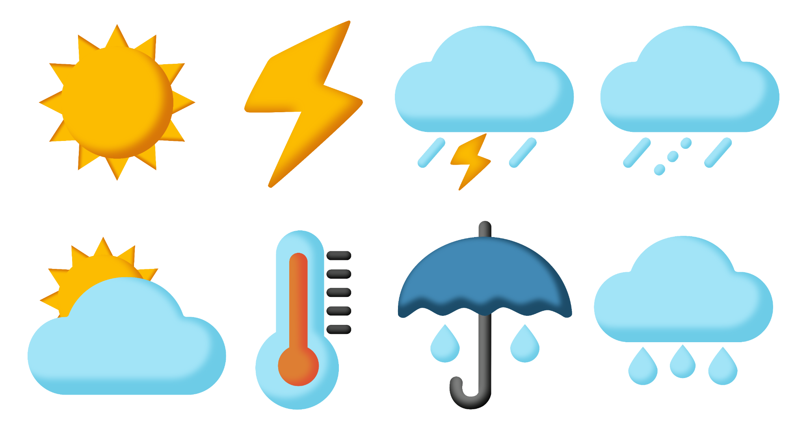

Precipitation
What does the long-term precipitation record show?
Module 2 · Tracking Climate Data
In Module 1, we provided the data and you interpreted it. Now you’ll use real climate records to answer questions yourself.
First in Corvallis. Then at a station near you.

Practice before you go local
What does the long-term precipitation record show?
What does the long-term temperature record show?
Practice station: Corvallis State University. You’ll use the same process later with a station near your garden.
Your climate-data tool
xmACIS is a user-friendly tool for exploring climate data from weather stations. Watch the short tutorial to learn the basics. Then you’ll practice with the Corvallis State University station.
Next stop: precipitation →
Corvallis · Investigation 1
Set up the Spring precipitation graph first.
Open xmACIS ↗Select Single Station → Seasonal Time Series.
Under Variable, select Precipitation.
Under Period of Interest, select Spring.
Under Station Selection, select Search and enter 97331.
Open More Options and select Include Regression Line.
Select Go.
Corvallis · Read the evidence
Measure Spring first. Then change only Period of Interest to Summer, Fall, Winter, and Annual. Keep Include Regression Line selected and select Go after each change.
Corvallis · Precipitation
Here is the pattern you measured in the Corvallis precipitation record.
Corvallis · Temperature
Return to your graph. Under the Variable dropdown, select Average Temperature. Repeat the previous exercise for Spring, Summer, Fall, Winter, and Annual, recording the regression-line value near the beginning and end of each graph below.
Accidentally closed your graph? Open xmACIS here ↗
Corvallis · Temperature
Here is the pattern you measured in the Corvallis temperature record.
Put the evidence together
Want to learn more about how your evidence compares with the scientific literature? Click here ↗
Your turn · Bring it home
Closed your graph? Open xmACIS here ↗
My Field Notebook
Use the same process you practiced in Corvallis. Include the regression line in each graph, measure its beginning and end, and work through Spring → Summer → Fall → Winter → Annual.
Your local climate record
Compare precipitation and temperature within each season, then look at the annual result below.
Your reflection
My Field Notebook
Your journal entry brings together the local evidence you measured and the questions it raised for your garden.
Investigation complete
You now have local climate evidence in your Field Notebook to carry into later decisions about a climate-resilient garden.